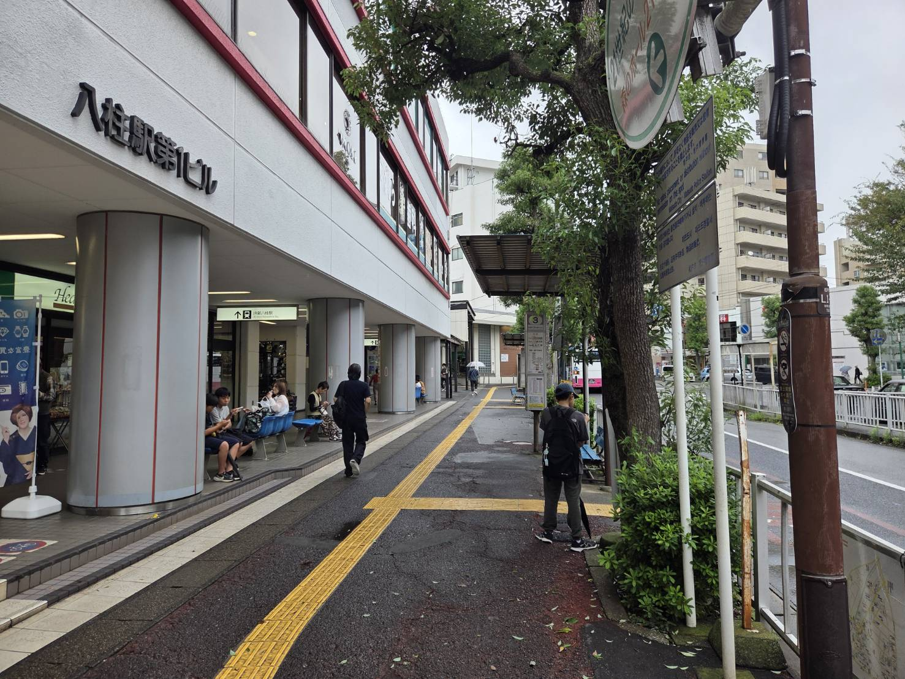
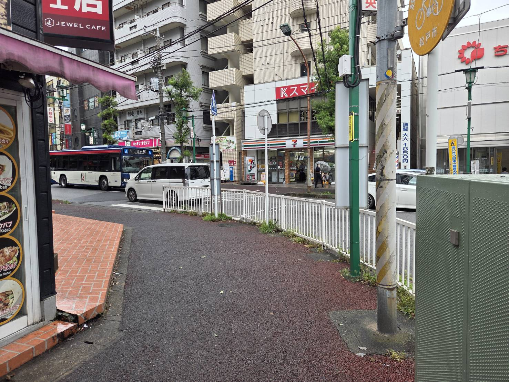
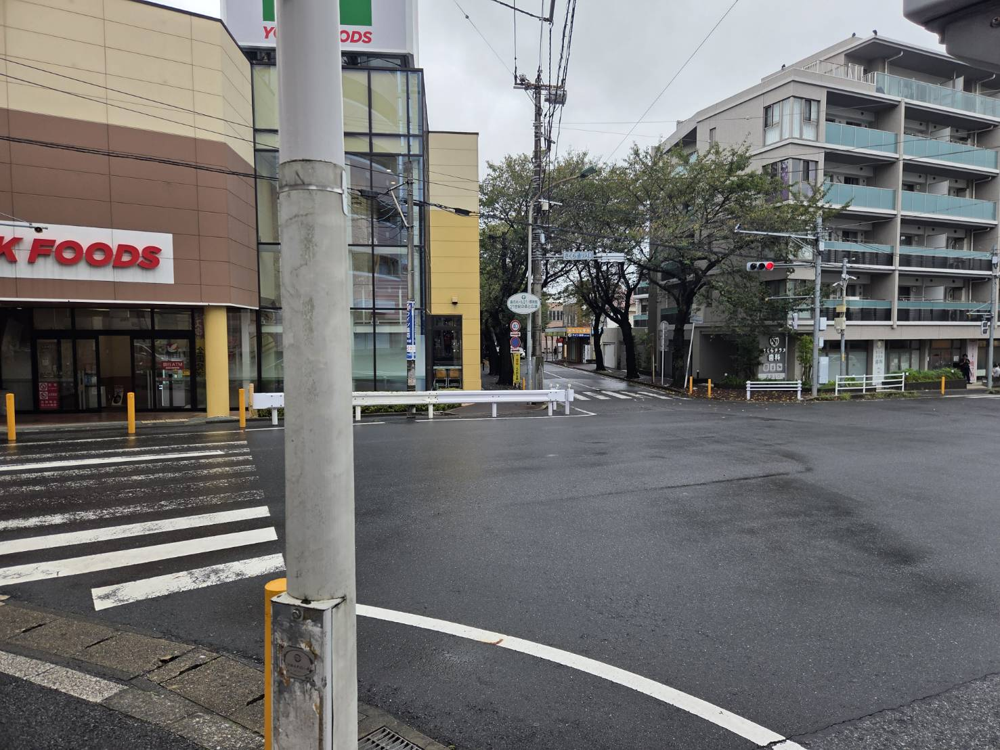
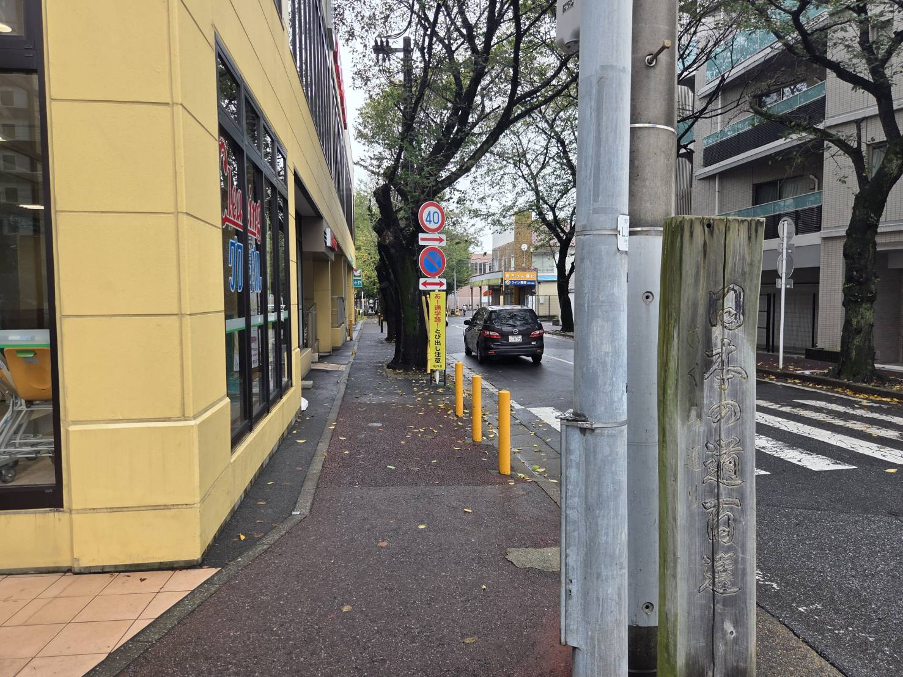
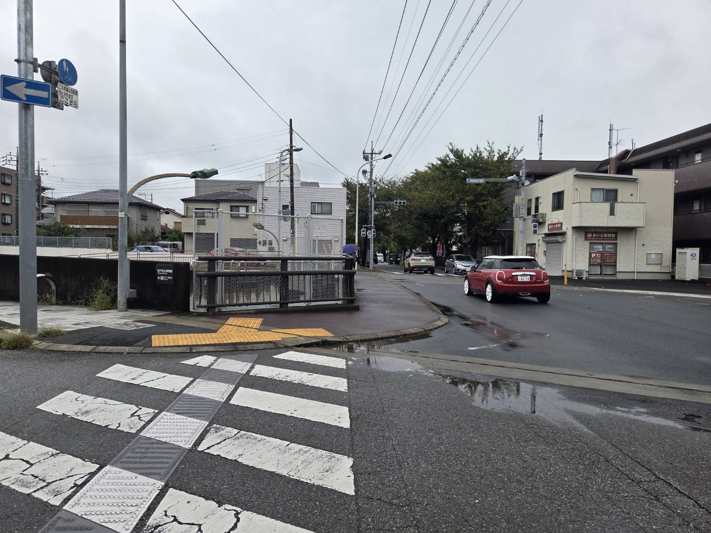
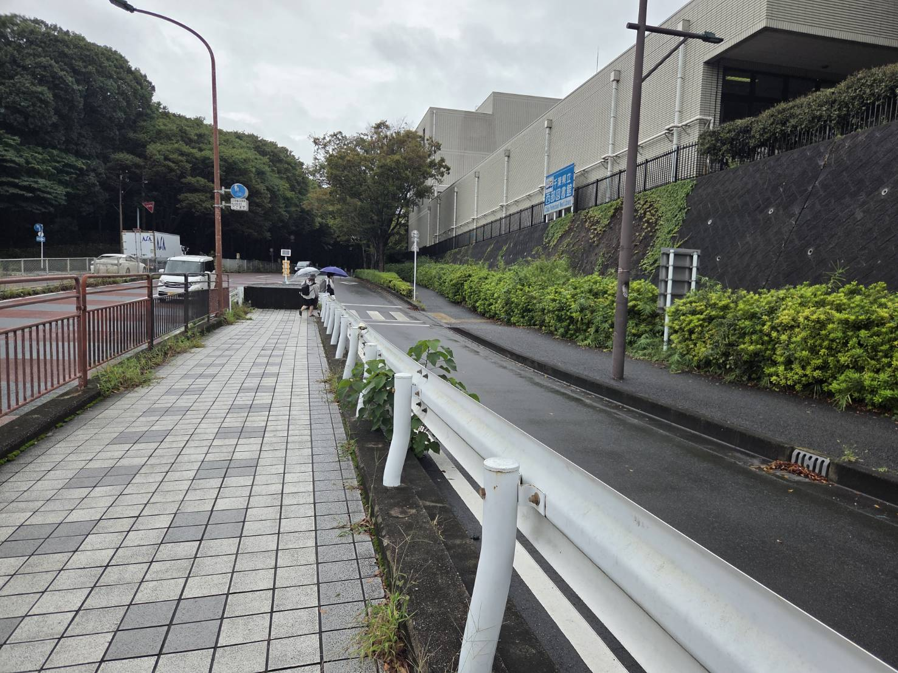
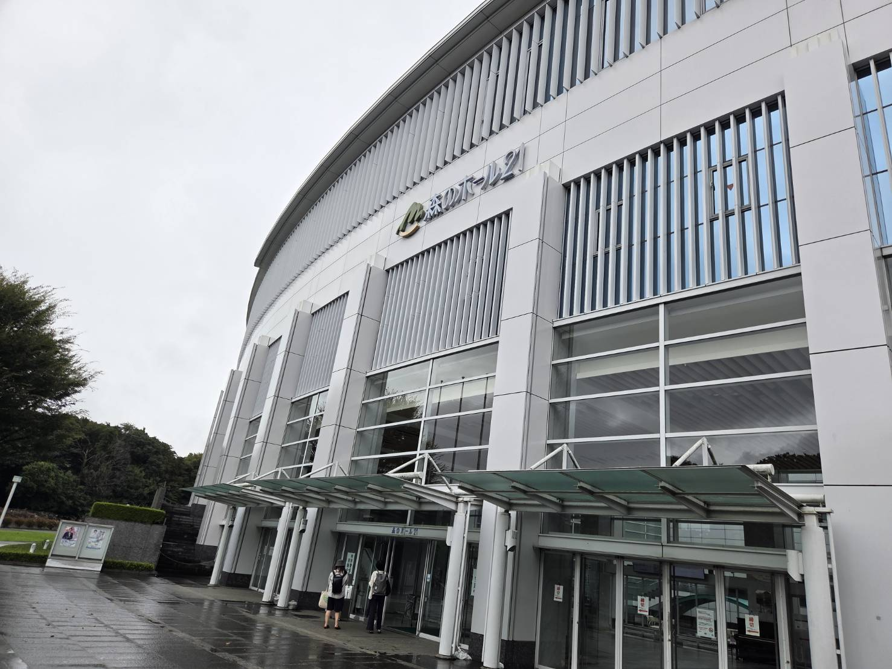
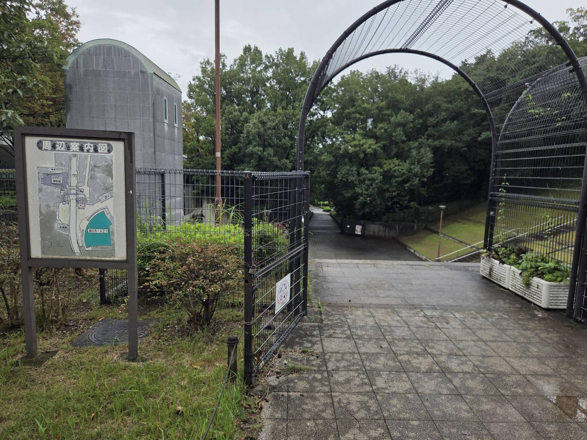
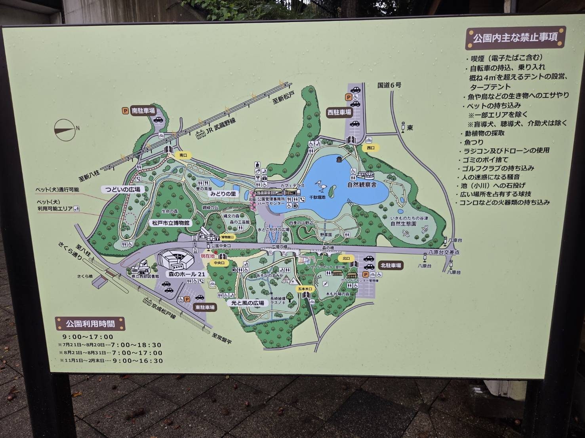
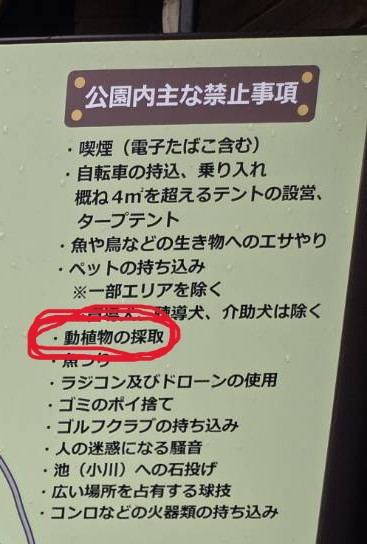

台風はどこへやら、雨は降っていなかった。
私は八柱駅に降り立った。
※ケバブ屋まで直進

本校の生徒であれば一度は八柱駅の名前を聞いたことがあるだろう。
※左に曲がった後、直進

そうと言っている間に、「桜通り」が見えてきた。

桜通りは、八柱駅から五香駅の間を結ぶように通っており、「日本の道100選」にも選ばれたことがあるのだ。
※下の画像の交差点まで直進

交差点についたら目の前にある「さくらばし」をわたって左に進む。
※橋を渡って奥の坂を下ると良い。

坂を進んでいくと右に「西部図書館」が見える。それに沿ってまた直進。

進んだ先、右手に見えてくるのは「松戸市文化会館」こと森のホール21である。
この施設はコンサートやイベント会場として利用されており、直近だと
「葉加瀬太郎 オーケストラコンサート 2026 〜The Symphonic Sessions〜」などが催された。
なお、本校の合唱祭は毎年ここで行われる。
すごいことだ、まったく。

そのような施設を過ぎてゆくと見えてくる闘技場みたいな広場。
こここそが私が目指していた聖地「21世紀の森と広場」である。

こちらが園内の地図だ。
中央あたりに記されている「縄文の森」こそ、私が初めてどんぐりでピザを作った場所である。懐かしい。
公園に入るまでの道にすでにマテバシイ(どんぐりの中でもおいしい)が落ちている。こりゃあ期待できそうだ。
早速拾おう。

「動植物の採取は禁止」
禁止されていた